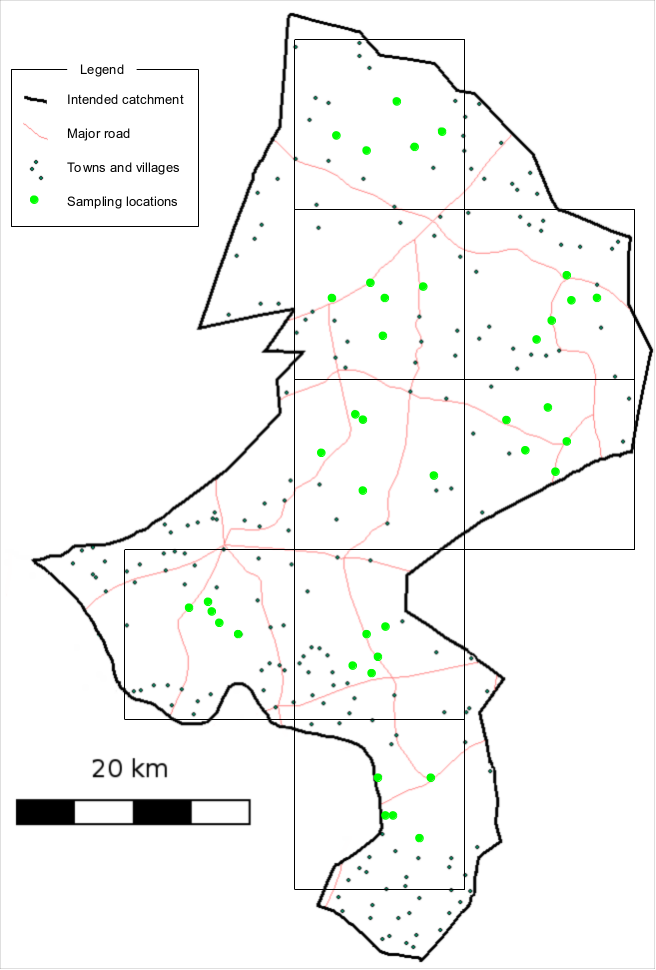
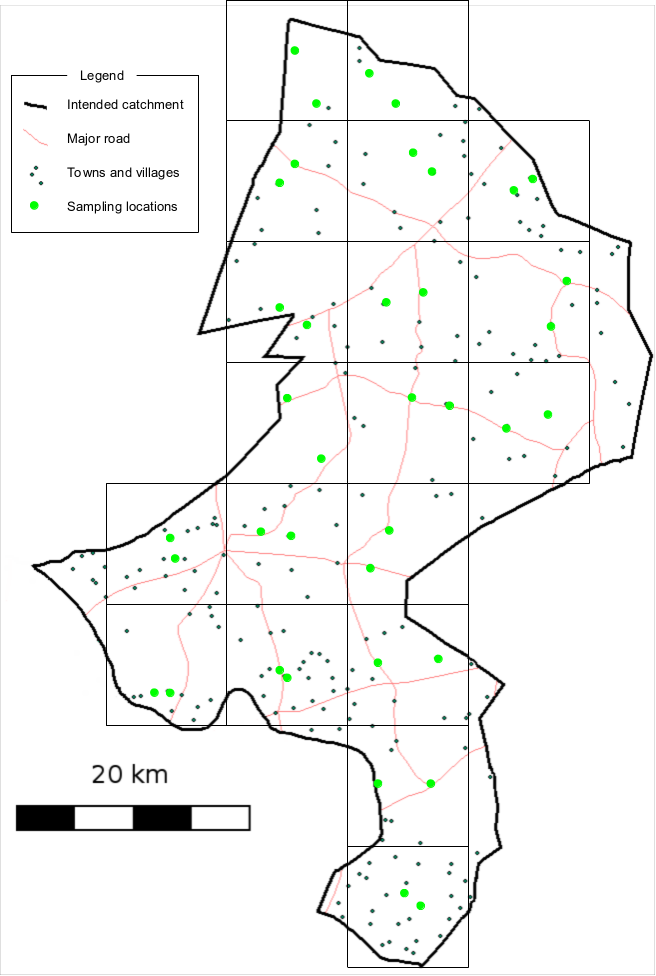
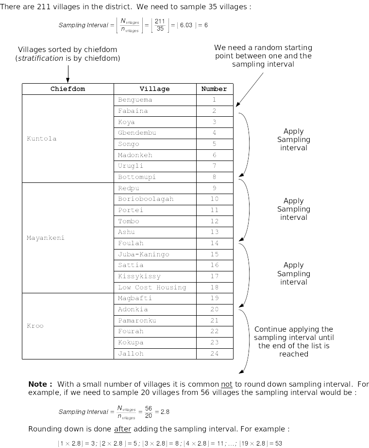

SLEAC Survey Sample Design
Mark Myatt
Source:vignettes/articles/sampling-plan.Rmd
sampling-plan.RmdThe SLEAC sample design uses a two-stage cluster sample survey.
First stage sampling method
This is the sampling method that is used to select the villages to be sampled. A centric systematic area sampling (CSAS)1 method or quadrat method could be used to select villages to be sampled for SLEAC surveys. The villages to be sampled may be selected by their proximity to the centre of each quadrat. The number/size of quadrats should be selected so as to spread the sample of villages over the entire program area. Many small quadrats are better than few large quadrats. For example, the sample illustrated in Figure 1B (nineteen quadrats) spreads the sample more evenly and over more of the program catchment area than the sample illustrated in Figure 1A (eight quadrats). You should use as many quadrats as is feasible with the time and resources available for the survey.

Figure 1A: Sampling plan with 8 quadrats. Figure 1B: Sampling plan with 18 quadrats
The CSAS/quadrat sampling method is appropriate for estimating coverage over a wide area such as a health district. Another useful approach is to stratify by clinic catchment area with a fixed number of villages selected systematically from a complete list of villages within each clinic catchment area (Figure 2) or within the boundaries of (e.g.) administrative areas for which lists of village or localities are available.

Figure 2: Selection of villages to be sampled using spatially stratified sampling
This first stage sampling method should be a spatial sampling method that yields a reasonably even spatial sample from the survey area. Cluster sampling using population proportional sampling (PPS), such as that used for SMART surveys, is not appropriate. The stratified approach outlined above and illustrated in Figure 2 also provides a reasonably even spatial sample using village lists and does not require the use of maps. It is important to note that sampling should not stop when the survey has reached its required sample size. Sampling only stops after you have sampled all of the the selected villages
The list-based method for stage 1 sampling is implemented in the
sleacr package through the
get_sampling_list() function. Using the same list of
villages/communities described above and given a target number of
villages/communities to sample, a sampling list can be created. Using
the village_list dataset and for a target of 40 sampling
clusters, a sampling list can be drawn as follows:
get_sampling_list(village_list, 40)which produces the following sampling list:
| id | chiefdom | section | village | |
|---|---|---|---|---|
| 13 | 13 | Badjia | Kpallay | Kugbahun |
| 38 | 38 | Bagbe | Jongo | Bandajuma |
| 63 | 63 | Bagbe | Nyallay | Fuinda |
| 88 | 88 | Bagbo | Gorapon | Kassay |
| 113 | 113 | Bagbo | Kpangbalia | Kpangbalia |
| 138 | 138 | Bagbo | Tissawa | Monjemei |
| 163 | 163 | Baoma | Bambawo | Feiba |
| 188 | 188 | Baoma | Mawojeh | Masao |
| 213 | 213 | Baoma | Upper Pataloo | Komende |
| 238 | 238 | Bumpe Ngao | Bumpe | Nguabu |
| 263 | 263 | Bumpe Ngao | Bumpe | Sembehun |
| 288 | 288 | Bumpe Ngao | Sewama | Juhun |
| 313 | 313 | Bumpe Ngao | Sahn | Sembehun |
| 338 | 338 | Bumpe Ngao | Taninahun | Nyandehun |
| 363 | 363 | Bumpe Ngao | Taninahun | Waterloo |
| 388 | 388 | Bumpe Ngao | Taninahun | Kangama |
| 413 | 413 | Bumpe Ngao | Yengema | Yengema |
| 438 | 438 | Gbo | Maryu | Kama |
| 463 | 463 | Jaiama Bongor | Lower Kama | Bangema |
| 488 | 488 | Jaiama Bongor | Tongowa | Lalewahun |
| 513 | 513 | Jaiama Bongor | Upper Kama | Bowohun |
| 538 | 538 | Kakua | Kpandobu | Manguama |
| 563 | 563 | Kakua | Nguabu | Gandorhun |
| 588 | 588 | Kakua | Samamie | Gbanja Town |
| 613 | 613 | Komboya | Kemoh | Manyama |
| 638 | 638 | Komboya | Mangaru | Kpamajama |
| 663 | 663 | Lugbu | Yalenga | Kpetema |
| 688 | 688 | Niawa Lenga | Kaduawo | Huawuma |
| 713 | 713 | Niawa Lenga | Yalenga | Kpah |
| 738 | 738 | Selenga | Mambawa | Gbangaima |
| 763 | 763 | Selenga | Old Town | Korwama |
| 788 | 788 | Tikonko | Seiwa | Kapima |
| 813 | 813 | Tikonko | Njagbla II | Failor |
| 838 | 838 | Tikonko | Seiwa | Gbanahun |
| 863 | 863 | Valunia | Deilenga | Konima |
| 888 | 888 | Valunia | Kendebu | Kpetema |
| 913 | 913 | Valunia | Lunia | Levuma |
| 938 | 938 | Valunia | Lunia | Njala |
| 963 | 963 | Valunia | Seilenga | Foya |
| 988 | 988 | Wonde | Central Kargoi | YawaJu |
Second stage within-community sampling method
This will usually be an active and adaptive case-finding method or a house-to-house census sampling method. These method find all, or nearly all, current and recovering SAM cases in a sampled village. Sampling should be exhaustive. This means that you only stop sampling when you are sure that you have found all cases in the community. Sampling should not stop when you have met a quota or the wider survey has reached its required sample size.
This is a two-stage sample because a sample of villages in the survey area is taken first (stage one) and then a “census” sample of current and recovering SAM cases is taken from each and every of the selected villages (stage two).
SLEAC survey sample size
SLEAC uses a target sample size (n) which, together with
prevalence and population estimates, is used to decide the number of
villages (\(n_{villages}\)) that should
be sampled in order to achieve the target sample size.
A target sample size (n) of forty (40) cases from each
service delivery unit in which coverage is to be classified is usually
large enough for most SLEAC applications.
In some settings it may be difficult or even impossible to find forty (40) cases. This will be the case if service delivery units are small and/or the prevalence of SAM is low. In these situations it is possible to use a smaller target sample size without increasing error. Table 1 below shows target sample sizes that may be used when the total number of cases in a service delivery unit is likely to be small.
Note that the total number of cases in a service delivery unit should be the estimate at the time of the survey. This can be estimated as follows:
\(\left \lfloor {Population_{\text{all ages}} \times \frac{\text{Percentage of population}_{\text{6-59 months}}}{100} \times \frac{\text{Prevalence SAM}}{100}} \right \rfloor\)
Table 1: Target sample sizes for 50% and 70% coverage standards for use when surveying small service delivery units and/or the prevalence of SAM is low.
#> cases n alpha beta
#> 1 500 39 0.09078419 0.08562322
#> 2 250 34 0.0980027 0.09390928
#> 3 125 31 0.09763227 0.08461451
#> 4 100 29 0.09280604 0.09037959
#> 5 80 29 0.0811892 0.07857344
#> 6 60 24 0.09359355 0.09353083
#> 7 50 24 0.07818089 0.07740396
#> 8 40 22 0.05548477 0.09274916
#> 9 30 19 0.06406797 0.06456772
#> 10 20 14 0.07043344 0.07747678| Total number of cases in the service delivery unit 2 | 50% standard | 70% standard or 30%/70% class thresholds |
| 500 | 37 | 33 |
| 250 | 35 | 32 |
| 125 | 31 | 29 |
| 100 | 29 | 26 |
| 80 | 27 | 26 |
| 60 | 25 | 25 |
| 50 | 23 | 22 |
| 40 | 21 | 19 |
| 30 | 17 | 18 |
| 20 | 15 | 15 |
If, for example, the total number of cases in a service delivery unit is estimated to be about sixty (60) cases then a target sample size of twenty-five (25) cases may be used.
This sample size estimation can be performed using the
sleacr package using the get_sample_n()
function.
get_sample_n(N = 60, dLower = 0.5, dUpper = 0.7)which gives the following:
#> $n
#> [1] 24
#>
#> $d
#> [1] 14
#>
#> $alpha
#> [1] 0.09353083
#>
#> $beta
#> [1] 0.09359355The target sample size (n) together with estimates of
the prevalence of severe acute undernutrition in the survey area and
population data is used to calculate the number of villages (\(n_{villages}\)) that will need to be
sampled in order to achieve the target sample size:
\[n_{villages} ~ \times ~ \left \lceil \frac{n}{\text{average village population}_{\text{all ages}} ~ \times ~ \frac{\text{Percentage of population}_{\text{all ages}}}{100} ~ \times ~ \frac{SAM prevalence}{100}} \right \rceil\]
This calculation can be performed using the
get_n_clusters() function in sleacr. If the
target sample size is 40 and the average population size per
village/cluster is 600:
get_n_clusters(n = 40, n_cluster = 600, u5 = 0.17, p = 0.02)
#> [1] 20